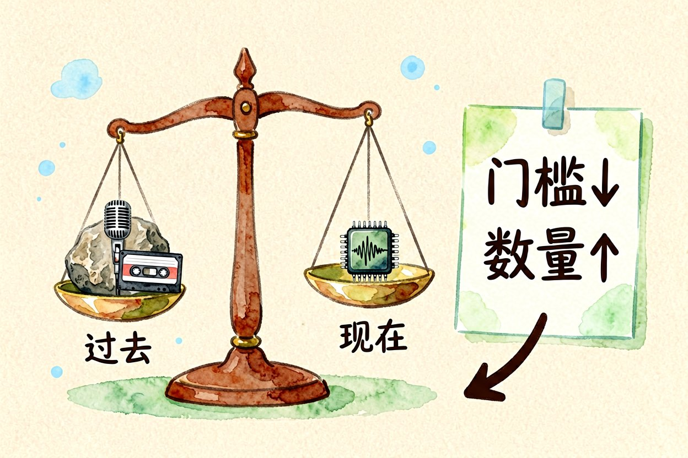
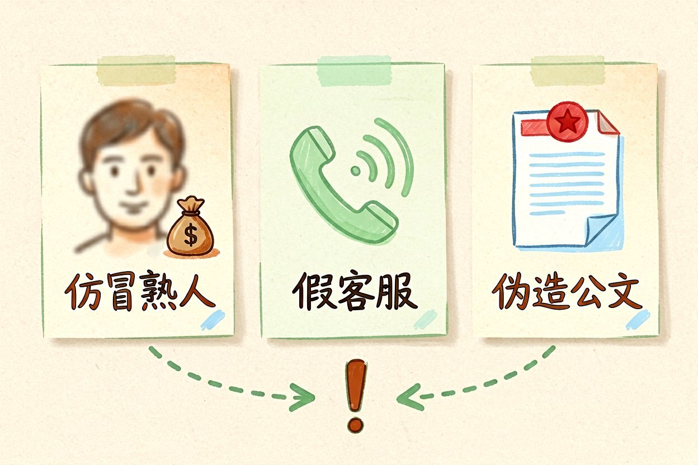
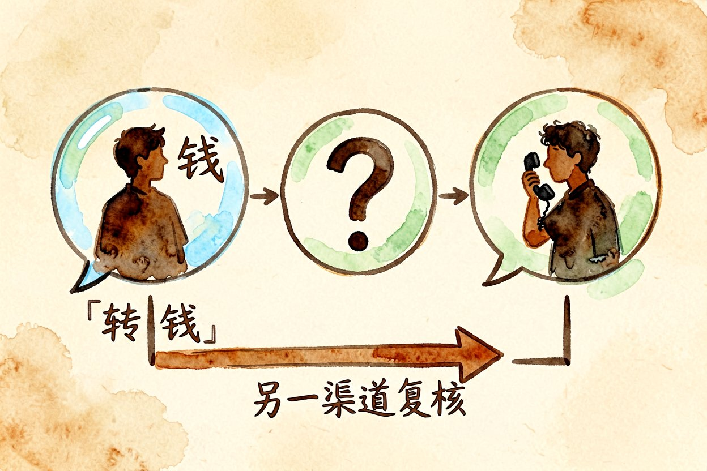
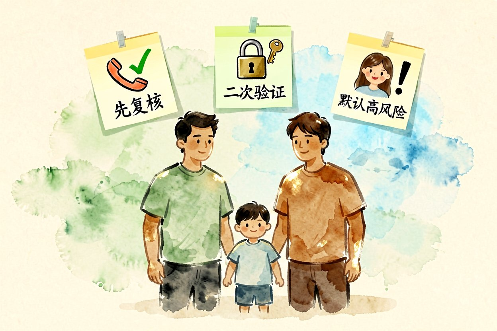
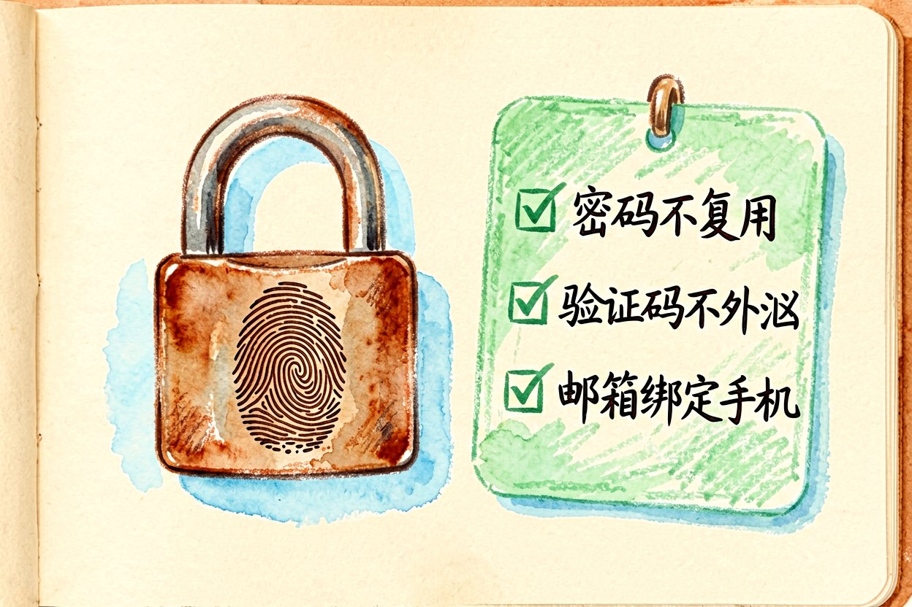
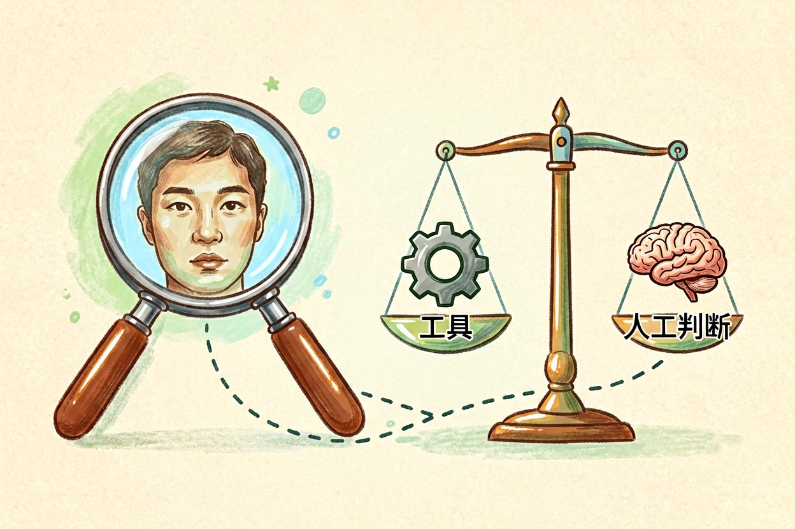
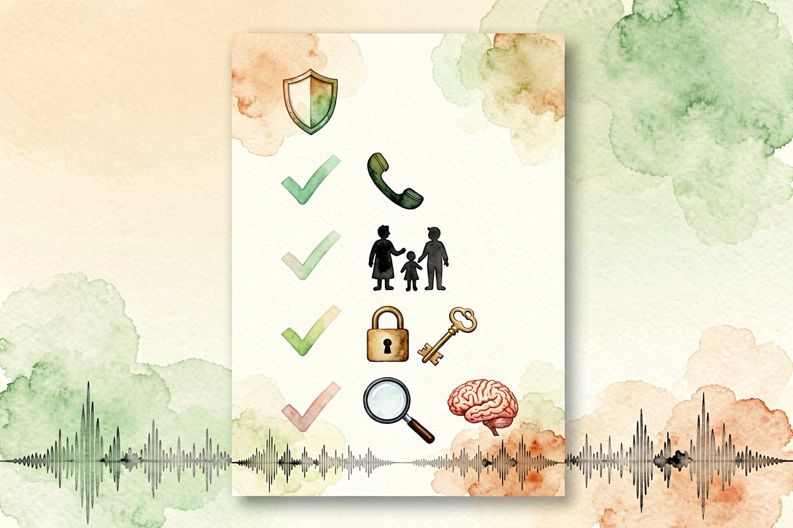

AI 时代防骗指南：普通人也该有的安全意识
换脸视频能冒充你说话，假客服能套走验证码，AI 时代防骗要先建立新的安全意识。
AI网络安全意识不是一个新词，但在深度伪造和自动钓鱼面前，老经验真的不够用了。先建立几条新习惯，比装十个防护软件更管用，因为大多数骗局盯的不是系统漏洞，而是人的信任。你越怕麻烦，骗子越爱找你，反而是肯多核实一步的人最安全。
为什么 AI网络安全意识突然重要

过去骗子要模仿你声音，得找声优、录素材。现在一段几秒音频加开源模型，就能合成你说话的语气。换脸视频也让"眼见为实"失效。攻击成本掉了一个数量级，普通人被盯上的概率反而更高。更麻烦的是，这类攻击不需要技术门槛，群里转个工具就能用，门槛一低，量就上来了。
三类最容易被骗的场景

第一是仿冒熟人：AI 生成老板或亲戚的视频，开口就借钱。第二是假客服：自动拨号加语音合成，套你验证码。第三是伪造公文：用真实红头照着改几个字，长辈最难分辨。这三类的共同点，是都先制造紧急感，逼你在没核实前就行动，这是最该警惕的信号。凡是催你"马上、别告诉别人"的，先停下来。
收到转账要求先做这件事

不管对方是谁，凡是涉及钱，先走另一条渠道确认。下面这段逻辑可以当成你的防骗底线：
def should_transfer(contact, channel):
if contact.ask_money and channel == "first_seen":
return "挂断，用电话或见面复核"
return "按原计划"电话复核这一步，能拦掉绝大多数冒充类诈骗。真老板要转账，也经得起你打一个电话确认，急着拦你的反而有问题。把这条写进家庭群，比装任何软件都实在。
给家人的三条提醒

把"先复核再转账"设成家庭规矩。教长辈看到语音或视频借钱，一律当诈骗处理，直到本人当面确认。账号开启二次验证，验证码谁要都别给。把家人的头像和声音都设为"高风险目标"，任何借钱请求默认走线下核实，能挡掉九成以上的冒充。孩子的手机也该讲一遍，别以为小孩不会被盯。
账号层面的基础防线

开启二次验证是最便宜的保险。密码别在多个站复用，验证码是最后一道门，谁要都别给。邮箱和支付绑定手机，丢号也能找回。很多人被攻破，不是对方技术强，而是密码十年不变还全站同款，这种习惯改了能挡掉大部分自动撞库。每季度换一次重要密码，成本几乎为零。
工具能帮上什么忙

水印识别、深伪检测这类工具能辅助判断，但别全信。真要紧的事，靠 AI网络安全意识加人工复核才是最稳的组合，关键决定仍要自己拍板。工具说没问题，不等于真的没问题，它也会看走眼。把工具当参考，别当裁判，安全感才真正握在自己手里。

本文信息核对于 2026-08-31。AI 产品的价格、免费额度与功能变动频繁，实际以各工具官网当前说明为准。